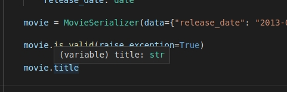
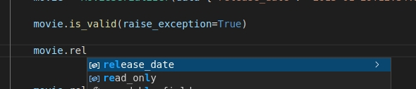

Django REST Framework - Typed¶
Overview¶


This project extends Django REST Framework to allow use of Python's type hints for automatically validating view parameters and generating serializer fields, as well as enabling strongly typed, direct attribute access on serializers.
Deriving automatic behavior from type annotations has become increasingly popular with the FastAPI and Django Ninja frameworks. The goal of this project is to provide these benefits to the DRF ecosystem.
Main benefits:
- View inputs can be individually declared, not buried inside all-encompassing
requestobjects. - Type annotations can replace repetitive view validation/sanitization code.
- Simple serializers can have their fields auto-generated from annotations
- Validated serializer data can be accessed from attributes, with their types known to the IDE
- Pydantic models and Marshmallow schemas are compatible types for view parameters. Annotate your POST/PUT functions with them to automatically validate incoming request bodies.
Views Example¶
from rest_typed.views import typed_api_view
@typed_api_view(["GET"])
def get_users(registered_on: date = None, groups: List[int] = None, staff: bool = None):
print(registered_on, groups, is_staff)
GET /users/registered/?registered_on=2019-03-03&groups=4,5&staff=yes
# Status code: 200
date(2019, 3, 3) [4, 5] True
GET /users/?registered_on=9999&groups=admin&staff=maybe
# Status code: 400 / ValidationError raised
{
"registered_on": "'9999' is not a valid date",
"groups": "'admin' is not a valid integer",
"staff": "'maybe' is not a valid boolean"
}
Serializers Example¶
You can use type annotations to generate basic serializer fields automatically.
from datetime import date
from rest_typed.serializers import TSerializer
class MovieSerializer(TSerializer):
title: str # --> CharField(required=True, allow_null=False)
release_date: date # --> DateField(required=True, allow_null=False)
description = None # --> DateField(default=None)
movie = MovieSerializer(data={
"title": "The Last Duel",
"release_date": "2021-10-09",
})
movie.is_valid(raise_exception=True)
print(movie.validated_data)
"""
{
"title": "The Last Duel",
"release_date": date(2021, 10, 9),
"description": None
}
"""
Once you've called is_valid(), you can also access validated attributes directly, and if you're using a popular IDE, you should get added type safety:
print(movie.title) # The Last Duel
print(movie.release_date) # date(2021, 10, 9)
print(movie.description) # None
IDE can help you understand and enforce types:

IDE can auto-complete attributes:
